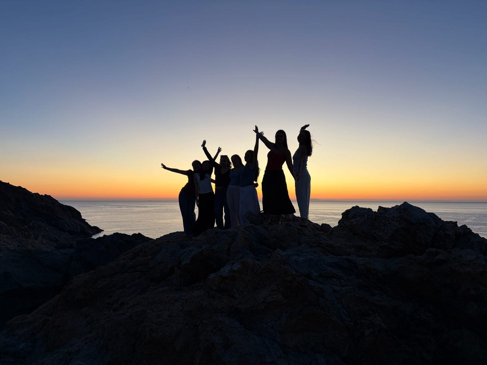

A PERSONAL FIELD GUIDE · IKARIA, GREECE · 2026
Life looks better
when you slow down.
I came looking for the secret to living longer. Six days later, I left with a different question: what makes a life worth living?

01 / OFF THE CLOCKCHOOSE YOUR OWN ROUTE
Where should we begin?
Five chapters, five perspectives. Choose an experience to explore.
Maybe living well begins by noticing the life we're already living.
Read the reflection ↗A GLIMPSE OF IKARIA
Moments worth remembering.
Click through real moments from our time on the island.
Explore all 25 photographs ↗